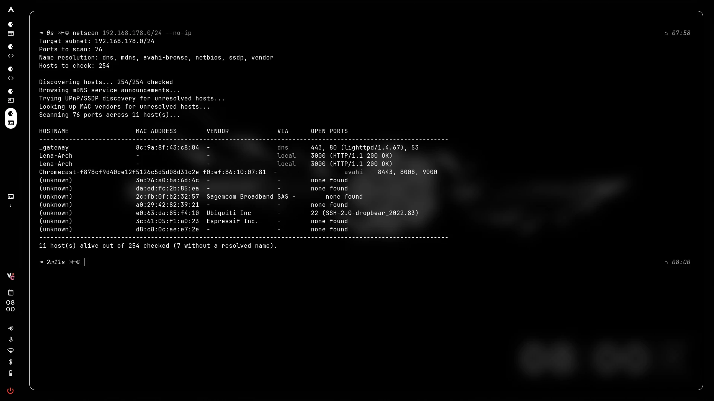

Private / Non-Commercial Project
NetScan
This project was created as a test to see whether I could make a network scanner in C.
Back To PortfolioDevelopment
Technologies
About
NetScan
NetScan is able to scan a network and check device hostnames ip address MAC open ports and vendor. It was created as a fun side project to learn some things about C programming and networking. There were many issues i had to overcome and it is still nowhere near perfect but it will most likely be left as is so I can persue other projects.

Running NetScan on 192.168.178.0/24